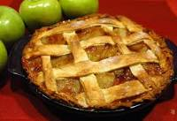

Odin's Delicious Apple Pie

Description
Odin's tart apple pie reminds of spiced mead and a warm fire
Ingredients
- 2 pie crusts (for top and bottom)
- 8 cups peeled and thinly-sliced granny smith apples/li>
- 1/2 cup white sugar
- 1/4 cup brown sugar
- 2 teaspoon cinnamon
- 1/2 teaspoon nutmeg
- 2 tablespoons butter
Steps
- Preheat oven to 400 degrees Fahrenheit
- Mix spices and sugar in a small bowl. Add to sliced apples, and toss
until evenly coated
- Place 1 pie crust into baking dish. Add apples inside of crust/li>
- Cut butter ito small chunks, and add to top of apples, providing
an even distribution
- Place second pie curst over the apples, and use a fork to seal the edges.
Cut 5 slits near the center of the top pie crust
- Bake for 70-75 minutes at 400 degrees fahrenheit